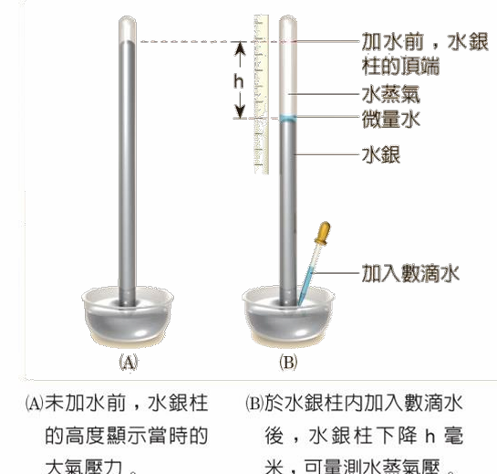
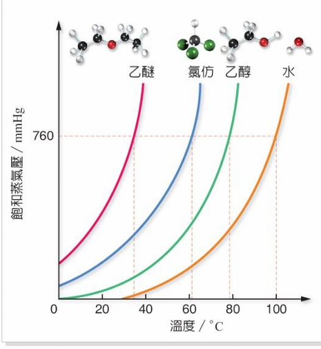

2-6 飽和蒸氣壓的測量 · 氣壓計法與溫度相圖
實驗原理
托里切利氣壓計法測蒸氣壓
水銀柱高度差法

【飽和蒸氣壓公式】
$$P_{\text{sat}} = h_{\text{下降}} = P_{\text{atm}} - P_{\text{Hg}}$$
液體飽和蒸氣壓 ＝ 水銀柱被推擠下降之垂直高度差 $h$
步驟 1
基準大氣壓狀態（未加待測液）
裝滿水銀之玻璃管倒置於槽中，頂端為
托里切利真空
。管內水銀柱高度恰平衡外壓（如 $760\text{ mmHg}$）。
步驟 2
注入待測微量液體
以彎管滴管由槽底注入液滴，因液體密度遠小於水銀，
迅速浮升至頂端真空處並快速汽化
。
步驟 3
達成動態平衡（飽和蒸氣壓產生）
蒸氣分子向下施壓使水銀柱下降 $h\text{ mm}$。此
下降高度 $h$ 即為該液體在該溫度下的飽和蒸氣壓
。
⚠️ 必考關鍵：如何判斷已達「飽和」蒸氣壓？
• 管頂必須
「有微量未蒸發之液滴殘留」
（維持氣-液共存），方能確定達「飽和」蒸氣壓！
• 若注入液體已
完全蒸發乾涸
，表示
未達飽和
，所測得蒸氣壓必
小於
真實飽和蒸氣壓（$P < P_{\text{sat}}$）。
相圖規律
飽和蒸氣壓 — 溫度關係圖
沸點與分子間引力

乙醚
34.6°C
無氫鍵 · 揮發性最強
氯仿
61.2°C
極性偶極-偶極力
乙醇
78.3°C
具分子間氫鍵
水
100.0°C
強氫鍵三維網狀結構
觀念 1
正常沸點 (Normal Boiling Point) 定義
當液體的
飽和蒸氣壓 ＝ 外界標準大氣壓 $760\text{ mmHg}$ ($1\text{ atm}$)
時的溫度。圖中各曲線與 $760\text{ mmHg}$ 紅色虛線之交點溫度即為正常沸點。
🔗 分子間引力：
乙醚
＜
氯仿
＜
乙醇
＜
水
💨 同溫蒸氣壓：
乙醚
＞
氯仿
＞
乙醇
＞
水
🌡️ 正常沸點：
乙醚
(34.6°C)
＜
氯仿
(61.2°C)
＜
乙醇
(78.3°C)
＜
水
(100°C)
觀念 2
引力、蒸氣壓與揮發性之因果規律
•
分子間引力越小
$\rightarrow$ 分子越易脫離液面汽化 $\rightarrow$
同溫下飽和蒸氣壓越大
$\rightarrow$ 揮發性越高 $\rightarrow$ 沸點越低。
•
溫度效應
：蒸氣壓隨溫度升高呈
非線性指數型急遽上升
（曲線斜率越來越陡）。